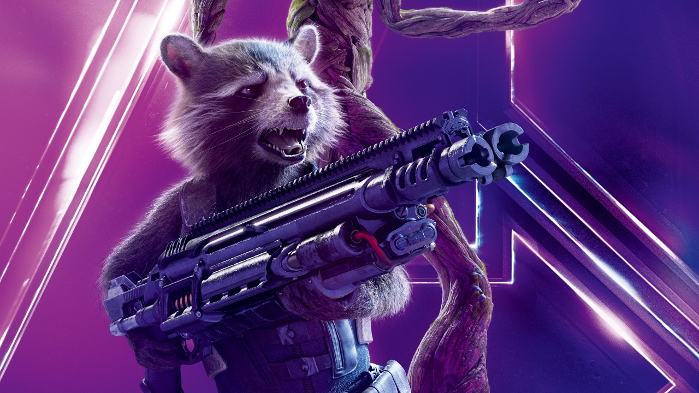

Rocket Raccoon
Rocket Raccoon atuou como o "Guardião do Quadrante Keystone", uma área do espaço isolada do resto do cosmos pelo chamado "Muro Galático". Rocket também foi o capitão da espaçonave "Rack 'n' Ruin". Ele e seu companheiro Wal Russ (uma morsa falante) são do planeta "Halfworld", uma colônia abandonada para doentes mentais, onde animais são geneticamente manipulados para dar-lhes inteligência a níveis humanos e a capacidade de andar em duas patas para muitos se tornarem cuidadores dos detentos. Rocket foi chefe da segurança que protegia a colônia de ameaça distintas.